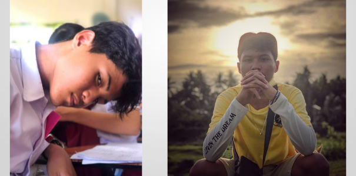

Objective & History
Music by: Thaehan - Ocean
What does
"Capture the Forgotten and Unforgotten recollections"
really express.
The "Forgotten reminiscence" represents the depiction of life that was once a beginning and now became an end.
The concept of this was to take a portrait of a perished memory, so that it may still be considered as a living memory in our hearts.
The "Unforgotten reminiscence"
on the other hand, represents the depiction of life that is still an origin and yet to become an end.
The idea of taking a portrait of it is pretty much plain. We try our best to prevent ours and your memories from expiring.
Click to see the full Image
This Tree is called the "Gift of the Goddess" This tree was a forgotten memory. It was a tree full of life and wisdom.
We used to hang around near this tree, talk about life and things. Everytime we sit beside this tree, it just felt so heavenly, the joy of being together with someone you love. But see,
The joy in the form of a "Short time", The short time we consider as a beautiful moment, beautiful moment that became memories, memories that was supposed to be eternal.
Did she ever wonder?
If she could capture our Forgotten and Unforgotten recollections.
"When will our happiness become eternal?"
What is our main Objective?
Taking Picture and Videos is really fun.
Besides Being known, Taking Pictures and Videos of others, and Financial covers. We want to expand our gallery. We want to take pictures and videos all around the world.
One day, we might have to build a community. Full of Talented and Aspiring young Photographers, Videographers and Editors. Then showcase each other's works in an exhibit.
We want everyone to know that a Portrait or a Photograph is not just a simple picture. Every Clip, Shot, Take, Cut. Has a big part of our life, Especially for the things we don't want to forget.
Our Industry Space
Main Directory Office

Location: Cosmopolitan Subdivision, Catania Street, block 69 lot 4. Lucena City
Branch Directory Office
Location: Maharlika Subdivision, Valhein St. Block 16, Lot 14. Lucena City
Team Building Office
Location: Citta Grande, Moprheus St. Block 44, Lot 199.
Some of our Cameras
Mamiya Leaf Credo 80MP Digital Back
$36,000.
Phase One XF IQ4
$53,000.
Hasselblad H4D – 40 Ferrari Edition
$31,500.
Disclaimer: I do not own any of these products nor buildings, and is just used as an example for my website. I have no money. But these Products are real and buyable. Only if you have money :p
Members
Ian Torre
Photographer / Videographer

Ian Torre
Editor / Camera Professor
Ean Torre
Head / Creative Director
Page Abouts
Bakuro Production Team Website was fully developed by "Ian Torre" in the span of only 2 days full time.
Started on November 12, 2021 till November 14, 2021
FAQs
Can the pictures in your gallery be used?
Answer: Unfortunately, no. Using the photographs in our gallery is porviden due to copyright notices and "All rights reserved".
How big is your community?
Answer: Our community runs through a lot of platforms. But it is estimated over 786,233 Members and connections.
You can also be one by checking out the links in my profile.
How many years are you guys have been working?
Answer: Our Production Team has been working for only 2 years and 4 months and counting.
Are your commissions still ongoing? if so, How many times do you guys work in a week?
Answer: Our commissions are still ongoing and you can hire us in any occasions. We work almost everyday in a week since we have 3 branches in three different places.
Is your Pre-sets Downloadable? How Much does it range?
Answer: Some Pre-sets are not Downloadable but a lot are. The Dark Urban Pre-set And
Silky Vintage Pre-sets are Labeled as Tier 3 Pre-sets and ranges
to only 328.49 Philippine peso. If you want to know the tier arrangements.
Visit our discord. Link is in my Profile.
What Camera do you guys recommend to beginners?
Answer: The "Nikon D3500", "Canon EOS Rebel SL3", "Nikon Z50". These we're one of the cameras we often used back then.
I can gladly say that they are very optimal and amazing. All ranges from 18,000 to 24,000 Philippine peso.